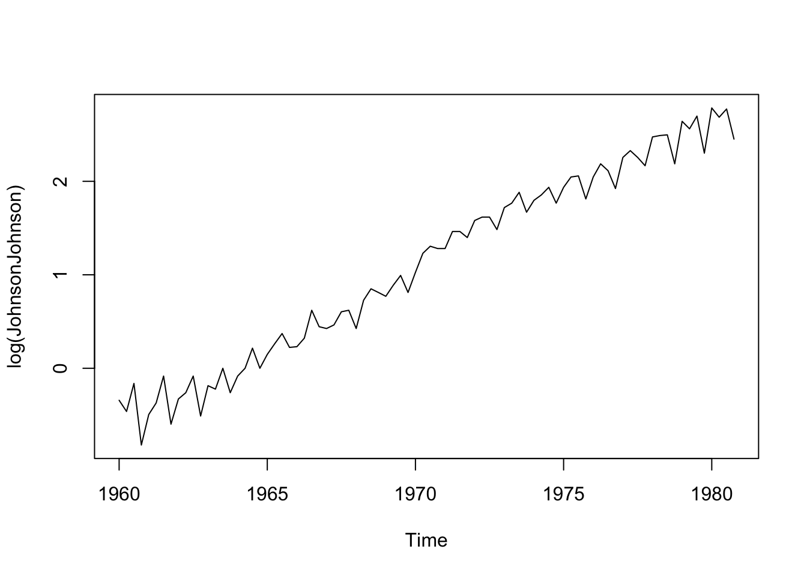

Pred modelovaním časového radu údajov často chceme skontrolovať, či sú údaje stacionárne. Mnohé modely predpokladajú stacionárne časové rady, a ak je tento predpoklad porušený, naša predpoveď nebude spoľahlivá. V tomto článku sa dozvieme, ako v programe R skontrolovať stacionaritu údajov časových radov.
Najprv načítame knižnice datasets, astsa and xts pomocou príkazu libarary(). Pred prvým použitím súboru údajov by ste mali použiť funkciu help(), aby ste si pozreli podrobnosti o údajoch. Ak si chcete pozrieť podrobnosti radu, použite napríklad help(JohnsonJohnson) alebo ?JohnsonJohnson.
library(datasets)library(astsa)library(xts)
Loading required package: zoo
Attaching package: 'zoo'
The following objects are masked from 'package:base':
as.Date, as.Date.numeric
# Náhlad na dáta zárobkov na akciu Johnson & Johnson # Nájdete to v knižnici datasetshelp(JohnsonJohnson)
Ak existuje trend a heteroskedasticita, môže pomôcť logaritnmická transformácia a diferencovanie, ako v prípade súboru údajov o štvročných zárobkoch na akciu Johnson a Johnson za obdobie od 1960 až 1980. Po prvé, logaritnmická transformácia údajov s kladnou hodnotou môže stabilizovať rozptyl. Po druhé, diferencovanie údajov dokáže odstrániť lineárny trend.
library(datasets)library(astsa)library(xts)# Náhlad na dáta zárobkov na akciu Johnson & Johnson # Nájdete to v knižnici datasetshelp(JohnsonJohnson)
5.2 Testy stacionarity časového radu
Prejdime k základným testom stacionarity.
5.2.1 Vizuálne kontrolovanie stacionarity časového radu
Jedným zo spôsobov, ako skontrolovať, či sú údaje stacionárne, je vykresliť ich. Tento postup by sa mal vždy používať v kombinácii s inými metódami, ale niektoré údaje ľahko vykazujú trendy a sezónnosť. Napríklad na grafe nižšie vidíme, že existuje trend smerom nahor a má aj sezónny vzor.
plot(JohnsonJohnson)
5.2.2 Augmented Dickey–Fuller Test stacionarity časového radu
Ďalším spôsobom, ako overiť, či sú údaje stacionárne, je použitie ADF testu. Týmto testom sa overí existencia jednotkového koreňa. Ak existuje jednotkový koreň, údaje nie sú stacionárne. ADF test je test s nulovou hypotézou,ktorá tvrdí, že existuje jednotkový koreň (potom je časový rad nestacionárny), a alternatívou, že neexistuje jednotkový koreň (potom je časový rad stacionárny). Na overenie môžeme použiť metódu adf.test z knižnice tseries.
library(tseries)
Registered S3 method overwritten by 'quantmod':
method from
as.zoo.data.frame zoo
adf.test(JohnsonJohnson)
Warning in adf.test(JohnsonJohnson): p-value greater than printed p-value
Augmented Dickey-Fuller Test
data: JohnsonJohnson
Dickey-Fuller = 1.9321, Lag order = 4, p-value = 0.99
alternative hypothesis: stationary
Vidíme, že hodnota p-value z výstupu funckie adf.test je 0,99, čo je viac ako 0,05 a tým príjmame nulovú hypotézu. Teda štvrťročné výnosy na akciu spoločnosti Johnoson & Johnson sú nestacionárne. Možeme použiť napríklad logaritmickú transformáciu, aby sme eliminovali heteroskedasticitu z dát, teda mali konštantný rozptyl, čo je jednou z podmienok slabej stacionarity.
plot(log(JohnsonJohnson))

adf.test(log(JohnsonJohnson))
Augmented Dickey-Fuller Test
data: log(JohnsonJohnson)
Dickey-Fuller = -1.1543, Lag order = 4, p-value = 0.9087
alternative hypothesis: stationary
Vidíme, že hodnota p-value z výstupu funckie adf.test je 0,9087, čo je viac ako 0,05 a tým príjmame nulovú hypotézu. Teda logaritmicky transformované štvrťročné výnosy na akciu spoločnosti Johnoson & Johnson sú nestacionárne.Ešte dáta stále vykazujú rastúci lineárny trend preto odstránime lineárny trend z transformovaných dát použitím prvej diferencie.
plot(diff(log(JohnsonJohnson)))
adf.test(diff(log(JohnsonJohnson)))
Warning in adf.test(diff(log(JohnsonJohnson))): p-value smaller than printed
p-value
Augmented Dickey-Fuller Test
data: diff(log(JohnsonJohnson))
Dickey-Fuller = -4.5649, Lag order = 4, p-value = 0.01
alternative hypothesis: stationary
Vidíme, že hodnota p-value z výstupu funckie adf.test je 0,01, čo je menej ako 0,05 a tým zamietame nulovú hypotézu. Teda diferencované prvým rádom logaritmicky transformované štvrťročné výnosy na akciu spoločnosti Johnoson & Johnson sú stacionárne.
5.2.3 Ljung-Box Test stacionarity časového radu
Ďalším testom, ktorý môžeme použiť, je Ljung-Boxov test. Týmto testom overíme nezávislosť našich údajov. Ide o ďalší test hypotéz, pričom predpokladom je, že údaje sú nezávislé, teda stacionárne. Prípadne, ak dostaneme nízku p-hodnotu (väčšinou menšiu ako 0,05), môžeme zamietnuť nulovú hypotézu a predpokladať, že údaje nie sú stacionárne.
Vidíme, že p-value je menšia ako 0,05 teda dáta sú závislé, teda nestacionárne
## odhad autokorelačnej funkcie na základe vzorca autoCorr <-function(k,d){ lagk <-length(d) - k mu <-mean(d) rad1 <-lag(d,k=-k)[c(1:lagk)] rad2 <- d[c((k+1):length(d))] cov <- (rad1-mu)*(rad2-mu) rn <-sum(cov)*(1.0/(var(d)*(length(d)-k))) rn}## odhad odo oka (rule of thumb) odhadneme koreláciu do lagu rovného polovičnému počtu údajov pocetAutoCorrLagov <-length(JohnsonJohnson)/2idx <-seq(1:pocetAutoCorrLagov)autoCorrVals <-unlist(lapply(idx,autoCorr,d=JohnsonJohnson))plot(autoCorrVals[c(1:19)],ylim=c(0,1))abline(h=0.2182)
acf(JohnsonJohnson)
Urobili sme odhad autokorelčnej funkcie pomocou vzorca. Vidíme, že štvrťročné výnosy na akciu spoločnosti Johnoson & Johnson sú silno autokorelované to znamená, že sú závislé. Podľa Ljung-Box testu vyšli závislé a teda rad je nestacionárny. Vidíme z grafu, že autokorelčná funkcia klesá.
Nulovosť autokorelačná funkcia by mala byť porovnávaná s hodnotou 0.2182.
2.0/sqrt(length(JohnsonJohnson))
[1] 0.2182179
Vidíme, že skoro všetky autokoreláciu sú štatisticky významné. Teda aj an základe Ljung=Box testu môžeme potvrdiť, že časový rad štvrťročných výnosov na akciu spoločnosti Johnoson & Johnson je nestacionárny.
Potom skúsme urobiť podobnú analýzu na časovom rade aplikuje prví diferencie na logaritmicky transformované štvrťročné výnosy na akciu spoločnosti Johnoson & Johnson.
## odhad odo oka (rule of thumb) odhadneme koreláciu do lagu rovného polovičnému počtu údajov pocetAutoCorrLagov <-length(diff(log(JohnsonJohnson)))/22.0/sqrt(length(diff(log(JohnsonJohnson))))
Vidíme, že Ljung-Box test stále potvrdil určitú závislosť medzi pozorovaniami.Hodnota autokorelácie významne poklesla po transformácii a diferencovaní. Vidieť, že niektoré lagy majú štatisticky nevýznamnú autokoreláciu. Tento časový rad z pohľadu ADF testu je stacionárny. Slabá stacionarita nevzžaduje nezávisloť údajov takže na základe ADF testu môžeme pracovať s týmto radom ako stacionárnzm a modelovať údaje pomocou ARIMA. Ak by sme neboli stále spokojný mohli by sme pokračovať ešte v teste stacionarity pomocou daľšieho testu.
5.2.4 KPSS Test stacionarity časového radu
Na určenie toho, či je časový rad trendovo stacionárny, možno použiť KPSS test (Kwiatkowski–Phillips–Schmidt–Shin).
Tento test používa nasledovnú nulovú a alternatívnu hypotézu:
H0: Časový rad je trendovo stacionárny.
HA: Časový rad nie je trendovo stacionárny.
Ak je p-hodnota testu menšia ako určitá hladina významnosti (napr. α = 0,05), potom zamietneme nulovú hypotézu a dospejeme k záveru, že časový rad nie je trendovo stacionárny.
kpss.test(JohnsonJohnson, null="Trend")
Warning in kpss.test(JohnsonJohnson, null = "Trend"): p-value smaller than
printed p-value
KPSS Test for Trend Stationarity
data: JohnsonJohnson
KPSS Trend = 0.50099, Truncation lag parameter = 3, p-value = 0.01
KPSS Test for Trend Stationarity
data: diff(log(JohnsonJohnson))
KPSS Trend = 0.16329, Truncation lag parameter = 3, p-value = 0.03559
Vdíme, že test kpss nepotvrdil stacionaritu u oboch časových radov pôvodného a transformovaného na prvé diferencie logaritmov pôvodného radu. Preto treba rad logaritmickej transformácie differencovať dvakrát a výsledky nížšie ukazujú, že aj ADF aj KPSS test potvrdzujú stacionaritu takého to radu. Ljung-Box test stále potvrdzuje prítomnost autokorelácie medzi transformovanými údajmi. Môžeme považovať rad dvojitej differencie na logaritmických transformovaných dátach štvročných výnosov na akciu spoločnosti Johnoson & Johnson za slabo stacionárny rad a môžeme ho používať na odhad v ARIMA modeloch.
Warning in adf.test(diff(diff(log(JohnsonJohnson)))): p-value smaller than
printed p-value
Augmented Dickey-Fuller Test
data: diff(diff(log(JohnsonJohnson)))
Dickey-Fuller = -7.8676, Lag order = 4, p-value = 0.01
alternative hypothesis: stationary